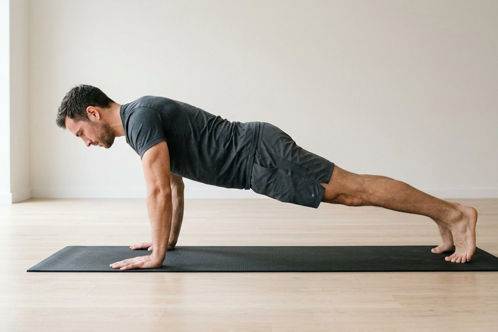

How to Do a Push-Up (and Build to 20)
Almost everyone who says they cannot do a push-up is actually doing the hardest version of it on the hardest surface. A push-up is a moving plank that happens to involve your arms: if your hips sag, you are pressing about 65% of your bodyweight through one long, unstable line. Change the angle — hands on a wall, a bench, a step — and the same movement becomes achievable in a week.
